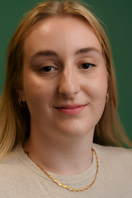

Cecilie
Den kreative
Jeg har øje for design, farver og de små detaljer, der får det hele til at hænge sammen. Jeg elsker at finde inspiration i kunst og visuelle trends og brænder for at skabe et univers, der føles både moderne og inspirerende.